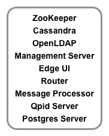
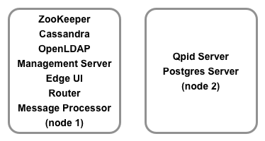
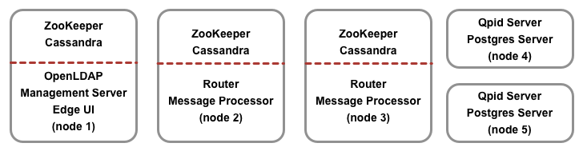
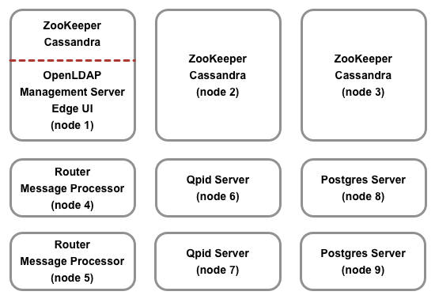
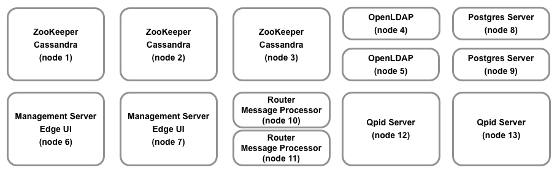
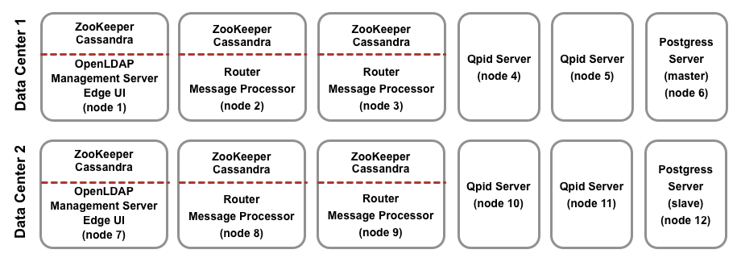
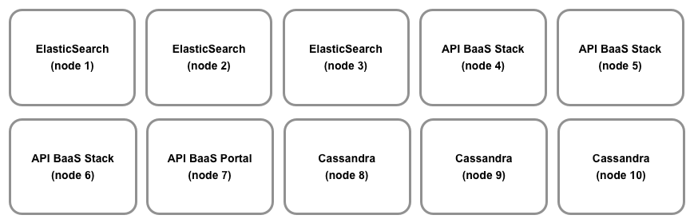
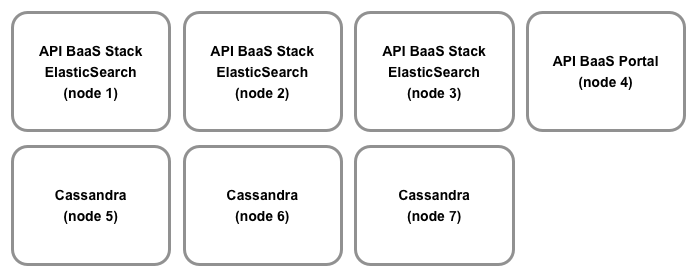

Edge for Private Cloud v. 4.17.05
A single host runs all Edge components. Note that this configuration is only to be used for getting started with Edge or for initial prototyping. It is not to be used as a deployment or production environment.

In this scenario, a single host runs Gateway standalone servers and associated components — Apigee Management Server, Apache ZooKeeper, Apache Cassandra, OpenLDAP, Edge UI, Apigee Router, and Apigee Message Processor. The other host runs Analytics standalone components —Qpid Server and Postgres Server.

In this scenario, three hosts run ZooKeeper and Cassandra clusters. One of those three hosts also runs the Apigee Management Server, OpenLDAP, and Edge UI. Two of those three hosts also run Apigee Router + Message Processor. Two hosts run Apigee Analytics.
This scenario combines cluster and Gateway components to reduce the number of servers used. To achieve optimal performance, the cluster can also be deployed on three different servers. This scenario also introduces a master-standby replication between two Postgres nodes if analytics statistics are mission critical.

Edge for Private Cloud v. 4.16.09
This scenario is similar to five-host clustered installation but has different Analytics components setup to achieve performance high availability.
This scenario introduces a master-standby replication between two Postgres nodes if Analytics statistics are mission critical.

This scenario is an enhancement of nine-host clustered installation covering separate data zones for data and Apigee servers in one datacenter setup. Here LDAP is installed as an independent separate node.
This scenario uses master-master OpenLDAP replication and master-standby Postgres replication in one datacenter setup.

This scenario covers disaster recovery and analytics high availability across two datacenters.
This scenario uses master-master OpenLDAP replication and master-standby Postgres replication (across two datacenters).

In this scenario, you install API BaaS on 10 hosts. The Cassandra nodes can be dedicated to API BaaS, or can be shared with Edge. This is the recommended configuration for highest performance because ElasticSearch requires a high amount of disk I/O and memory.

As an alternative, you can install a 7-host topology where three hosts run the API BaaS Stack and ElasticSearch.

In a BaaS installation with multiple data centers, each data center has either 7 or 10 nodes.
Monetization Services runs within any existing Apigee Edge setup. In this scenario, you install Monetization Services the Apigee Management Server and Message Processor. To install Monetization on Edge where the Edge installation has multiple Postgres nodes, the Postgres nodes must be configured in Master/Standby mode. You cannot install Monetization on Edge if you have multiple Postgres master nodes.